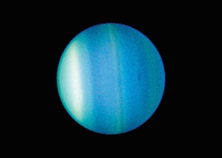

URANÜS
Uranüs küçük kayalık merkezinin üstündeki su, metan ve amonyak sıvılarından oluşur. Atmosferi
Jüpiter ve Satürn’de olduğu gibi hidrojen ve helyumdan oluşmuştur. Ayrıca metanda içerir.
Uranüs’e mavi rengi veren madde metandır.

Uranüs Gezegeni (Kaynak:NASA)
Uranüs’ün soluk görünen halkaları vardır. İç halkaları dar ve karanlıktır. Dış halkaları ise parlak
renklidir ve kolay görülür. Venüs gibi Uranüs’te diğer çoğu gezegene göre ters yönde döner. Diğer
gezegenlere oranla eksen eğikliği daha fazladır.Uranüs’ün 13 halkası vardır.
Uranüs bir gaz devi değil buz devidir. Katı bir çekirdek üzerine çoğunlukla akışkan buzlu
malzemeden oluşur. Uranüs’ün yoğun atmosferi metan, hidrojen ve helyumdan oluşur.
Uranüs yan dönen tek gezegendir. Dünya ve diğer gezegenlerin aksine kendi etrafında ters yöne
(doğudan batıya) doğru döner.
Fotoğrafta Uranüs’ün 4 ana halkası ve 10 uydusu görülüyor. Bu görüntü,
atmosferdeki bulutların farklı yüksekliklerini ve kalınlıklarını göstermek için eklenen renkler içeriyor.(Kaynak:NASA)
Uranüs’ün bir günü 17 saatten biraz fazladır. Tam olarak 17 saat 14 dakika sürer. Bir yılı ise
Dünya’nın 84 yılına eşittir.Uranüs’ün bilinen 27 uydusu vardır.1781’de William Herschel tarafından
Büyük Britanya’da keşfedilmiştir. Bu gezegen, sadece Voyager 2 uzay aracı tarafından ziyaret
edilmiştir.
Kaynak: NASA